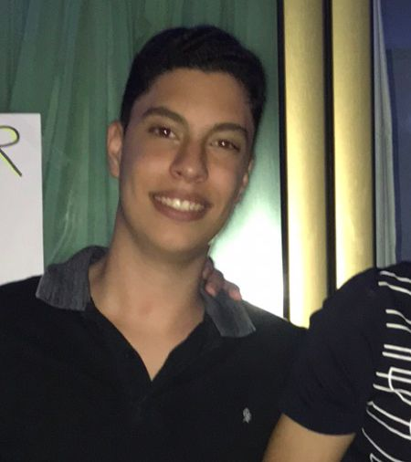

João Victor Muniz Rocha
Web devolop student
Sobre mim
Sou estudante de Ciência da Computação da Universidade Católica de Pernambuco. Por fora da faculdade,
estou estudando desenvolvimento web e almejo me especializar
front-end o quanto antes. Sou apaixonado por futebol, jogo e faço aula de tênis. Meus jogos on-lines
preferidos são os FPS mas
ultimamente jogos modo história chamam mais minha atenção
Formação
-
Conclui o ensino médio no colégio Madre de Deus em 2019
-
Ingressei e fiz o terceiro período de Engenharia Eletrônica na UFRPE porém não era de fato o que eu
queria exercer, foi quando decidi mudar de curso.
-
Hoje estou no terceiro período de Ciência da computação
-
Iniciei um curso de Python pela Udemy e aos poucos irei concluindo
-
Minha prioridade hoje são aulas que estou tendo sobre desenvolvimento web e foi algo que eu me
apaixonei e será o motivo do meu esforço.